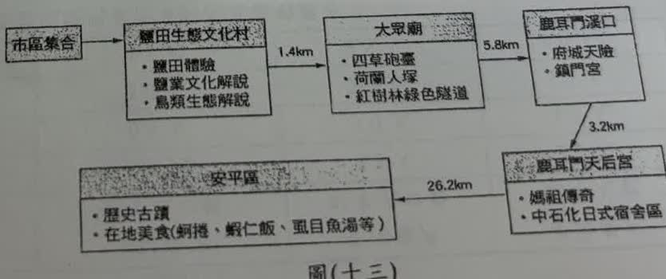
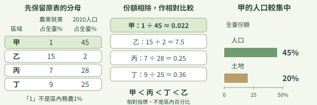
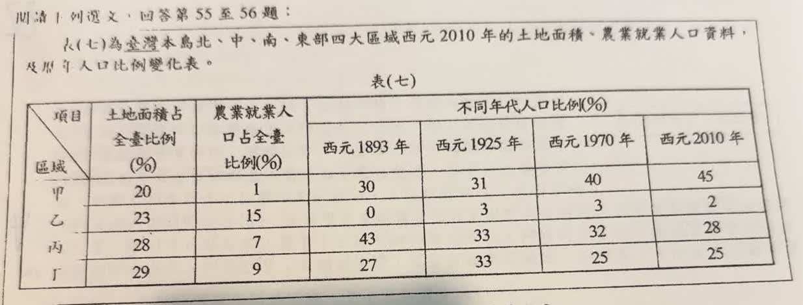
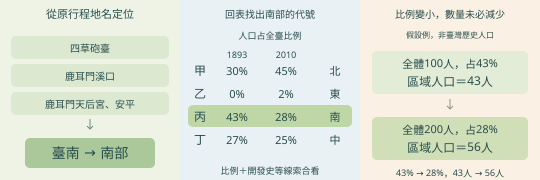
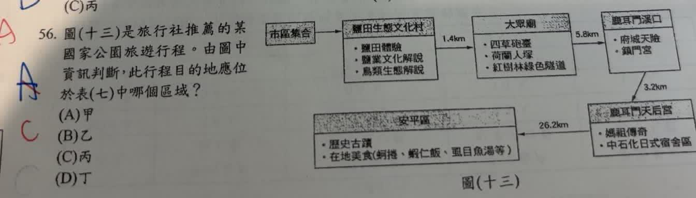

完整原題
作答所需文章／材料
表(七)為臺灣本島北、中、南、東部四大區域西元2010年的土地面積、農業就業人口資料，及歷年人口比例變化表。| 區域 | 土地面積占全臺比例（%） | 農業就業人口占全臺比例（%） | 1893年人口比例（%） | 1925年人口比例（%） | 1970年人口比例（%） | 2010年人口比例（%） |
|---|---|---|---|---|---|---|
| 甲 | 20 | 1 | 30 | 31 | 40 | 45 |
| 乙 | 23 | 15 | 0 | 3 | 3 | 2 |
| 丙 | 28 | 7 | 43 | 33 | 32 | 28 |
| 丁 | 29 | 9 | 27 | 33 | 25 | 25 |
地理第55題｜都市化程度與區域人口比例
地理第56題｜台江國家公園行程與南部區域

先想一想，再查看答案、解說與原圖
地理第55題｜都市化程度與區域人口比例
分享原卷｜第 55 題 · 首次出題日期 2026-08-26 · 原AI對話 ↗
逐項解析
| 選項與原句 | 判讀 | 句意與判斷理由 |
|---|---|---|
| (A) 甲 | 應選 | 農業就業的全臺份額相對該區人口份額最低，且人口集中程度高。 |
| (B) 乙 | 不選 | 不能只看土地面積；其農業就業份額相對人口份額並非最低。 |
| (C) 丙 | 不選 | 相對指標7÷28高於甲的1÷45。 |
| (D) 丁 | 不選 | 相對指標9÷25也高於甲的1÷45。 |
詳細說明與解題步驟
先釐清分母：表中寫的是農業就業人口「占全臺」的比例，不是該區居民中有多少百分比務農。不能直接把甲的1寫成「甲區只有1%的居民務農」。
要比較各區內部的相對務農程度，可把農業就業的全臺份額除以該區2010年人口的全臺份額：甲1÷45≈0.022、乙15÷2＝7.5、丙7÷28＝0.25、丁9÷25＝0.36。這些是用來排序的相對指標，不是直接換算出的區內務農百分比；共同的全臺基準不影響四區高低順序。
甲的相對務農程度最低，同時占土地20%、人口45%，人口集中且較偏非農活動，最符合高度都市化，選A。單看人口最多或單看農業的全臺份額最少，都不如兩欄一起判讀完整。
原AI答案A不變，但原解說把全臺份額直接當作區內比例，本頁補充分母差異。原表欄名與數值照原卷保留，作為題目材料判讀，不將其當成已另行查證的官方統計。

① 占全臺，不是占區內
原表農業欄寫占全臺比例，不能把甲的1直接說成甲區居民只有1%務農。比較2010年時，也要對照同年的區域人口份額。
② 兩個份額相除，比較相對程度
農業份額除以人口份額：甲約0.022，乙7.5，丙0.25，丁0.36。甲最低；這些是相對指標，不是區內務農百分比。
③ 人口集中，配合非農線索
甲占土地20%，卻占人口45%，人口相對集中；再配合相對務農程度最低，最符合高度都市化。不能只看人口最多，就跳過其他資料。
④ 分清全臺份額，都市化比較選甲
答案 A：甲
- 先釐清分母：全臺份額不等於區內比例。
- 農業份額相對人口份額，甲最低。
- 土地20%、人口45%，人口相對集中。
核對註記：已核對題幹、全部選項與必要材料；教材對應課次未確認，歸綜合。
原圖（僅本題）

地理第56題｜台江國家公園行程與南部區域
分享原卷｜第 56 題 · 首次出題日期 2026-08-26 · 原AI對話 ↗
逐項解析
| 選項與原句 | 判讀 | 句意與判斷理由 |
|---|---|---|
| (A) 甲 | 不選 | 甲的人口份額上升至45%，依本題四區域分布與歷史趨勢判為北部，非臺南所在。 |
| (B) 乙 | 不選 | 乙的早期人口份額極低、土地占比大，對應東部，不是臺南。 |
| (C) 丙 | 應選 | 丙對應南部，與鹿耳門、安平、四草等臺南景點吻合。 |
| (D) 丁 | 不選 | 丁對應中部，與題目臺南行程不符。 |
詳細說明與解題步驟
先從行程定位，而非只看國家公園這個名稱：四草砲臺、鹿耳門溪口、鹿耳門天后宮、安平區等都指向臺南及台江周邊。臺南位於南部，還須回表(七)辨認哪個代號對應南部。
甲人口份額由30%增至45%，符合後期人口向北部集中；乙早期人口份額低而土地範圍較大，對應東部。丙早期人口份額43%最高，後來降為28%，符合早期南部開發較早、後來人口重心北移的趨勢，因此丙為南部，選C；其餘丁對應中部。
表中人口比例下降是占全臺份額降低，並不代表該區實際人口必然減少。原AI在說明行程時另外加入圖上沒有的億載金城、德記洋行、安平古堡；這些也在臺南，但本題應依真正行程所列的四草、鹿耳門等線索作答，沒有將額外景點補進題目。

① 四草、鹿耳門、安平，指向臺南
從原行程找地名：四草砲臺、鹿耳門溪口、鹿耳門天后宮與安平都在臺南一帶。先定位為南部，再查表找代號；不必把行程沒有列的景點補進來。
② 回到表格，丙對應南部
合看開發史與人口分布：南部早期開發較早，丙在1893年占43%，後降至2010年的28%；甲後期占比上升對應北部，乙對應東部，丁對應中部。因此臺南行程選丙，也就是C。
③ 人口占比下降，不等於人口變少
比例的分母是全臺人口。用假設例來看：全體100人時，43%是43人；全體增加為200人時，28%是56人。比例雖降，區域人數仍可能增加，不能只看占比就判人口減少。
④ 先定位臺南，再回表找南部代號
答案：C，丙（南部）
- 原行程地名定位臺南，屬南部。
- 結合開發史與表格，南部對應丙。
- 人口份額與實際人口數要分開判讀。
核對註記：已核對題幹、全部選項與必要材料；教材對應課次未確認，歸綜合。
原圖（僅本題）

